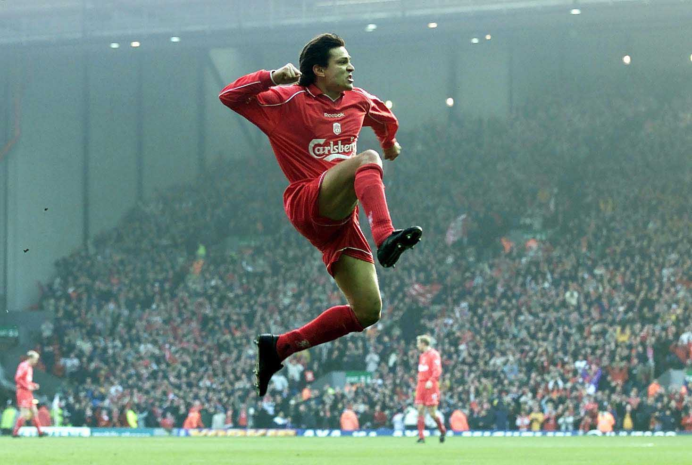

Jari Litmanen
De carrière van Jari Litmanen
Jari Litmanen is een voormalige Finse voetballer die vooral bekend werd als aanvallende middenvelder. Hij begon zijn professionele carrière in Finland en brak later internationaal door bij Ajax.
Bij Ajax beleefde Litmanen zijn grootste successen. In het seizoen 1994/1995 won hij met Ajax de Champions League. Ook werd hij meerdere keren kampioen van Nederland en won hij verschillende andere prijzen.
Litmanen stond bekend om zijn goede techniek, slimme passes en belangrijke doelpunten. Hij was een belangrijke speler in het succesvolle Ajax-team van de jaren 90.
Na zijn succesvolle periode bij Ajax speelde hij onder andere voor FC Barcelona en Liverpool. Ook speelde hij voor verschillende clubs in Finland, Duitsland en Zweden.
Voor het Finse nationale elftal was Litmanen jarenlang een belangrijke speler. Hij speelde veel interlands en werd een van de bekendste sporters uit Finland.
Door zijn prestaties wordt Jari Litmanen gezien als een van de beste Finse voetballers aller tijden. Vooral zijn periode bij Ajax heeft ervoor gezorgd dat hij een echte voetballegende is geworden.

1995In 1995 had Litmanen zijn beste seizoen. • UEFA Champions League: Winnaar met Ajax (seizoen 1994/95, finale tegen AC Milan). • Wereldbeker voor clubteams (Intercontinental Cup): Winnaar in november 1995 tegen Grêmio. • Nederlandse Supercup (Johan Cruijff Schaal): Winnaar. • Individuele erkenning: Derde plaats bij de verkiezing van Europees Voetballer van het Jaar (Ballon d'Or) in 1995 en uitgeroepen tot Voetballer van het Jaar in Nederland.
src=" src="https://www.youtube.com/embed/JOUW_VIDEO_ID" title="YouTube video" title="YouTube video"